01 / 전송5.13s
WARM. SIMPLE. PLAYFUL.2026.09
Your crypto.
Family style.
보기만 했던 디테일을, 직접 움직여보세요.
원본 소스와 영상으로 완성한 Family 인터랙션 라이브러리.
22interactive previews
9original product films
14reference scenes
49color tokens
실무용 키트 ZIP ↓22 interactive previews ↗9 original product films ↗14 reference scenes ↗49 color tokens ↗
공개 코드에서 찾은 실제 모션 수치와 원본 영상을 바탕으로 재구성했습니다. 각 카드에서 직접 조작하고, 동작 설명과 구현 코드까지 확인할 수 있습니다.
01 / COMPLETE SOURCE BROWSER
All sources, searchable.
추출된 SVG, hero shape, 영상, 폰트, 토큰, 코드, 캡처와 대체 구현을 한 화면에서 확인합니다.
비공개이거나 구조가 확인되지 않은 앱 흐름은 원본 영상과 로컬 재구성을 분리해 표시합니다.
02 / MOTION PLAYGROUND
Not just a screenshot.
드래그하고, 누르고, 재생해 보세요.
작은 디테일 하나하나를 움직이는 썸네일로 만들었습니다.
원본 수치 · 공개 코드에서 확인재구성 · HTML/SVG로 직접 조작카드를 누르거나 ‘재생’으로 움직임을 확인하세요.
03 / ORIGINAL PRODUCT FILMS
Inside the wallet.
목록으로만 있던 9개의 앱 동작을 실제 영상으로 담았습니다.
썸네일에서 재생하거나 크게 열어 프레임을 천천히 살펴보세요.
02 / 전송3.60s
03 / 전송5.33s
04 / 탐색6.03s
05 / 탐색2.73s
06 / 탐색5.52s
07 / 관리3.40s
08 / 관리3.82s
09 / 관리5.93s
원본 영상과 직접 조작하는 HTML 데모는 다른 자료입니다. 위 영상은 실제 화면의 시각적 움직임을 보존하며, 인터랙티브 재구성은 Motion playground에서 볼 수 있습니다.
04 / COMPLETE SCENE ATLAS
Every scene, accounted for.
원본 영상의 처음부터 끝까지 14개 영역을 대조했습니다.
각 원본 썸네일에서 관련 구현으로 바로 이동할 수 있습니다.
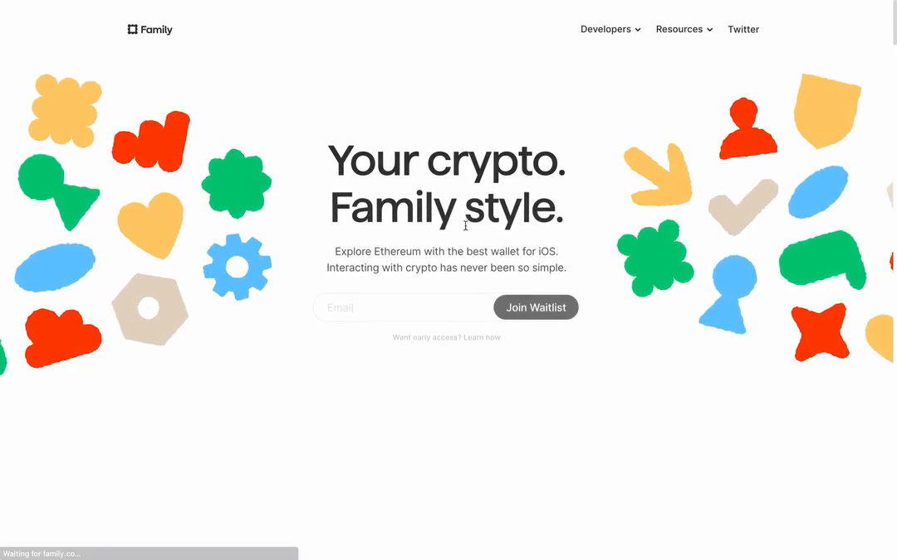
0–3초01 / HERO
Hero & navigation
가운데 제목과 양옆 장식, 대기자 등록 폼. 장식 드래그·등장·흔들림과 nav 패널을 각각 구현했습니다.
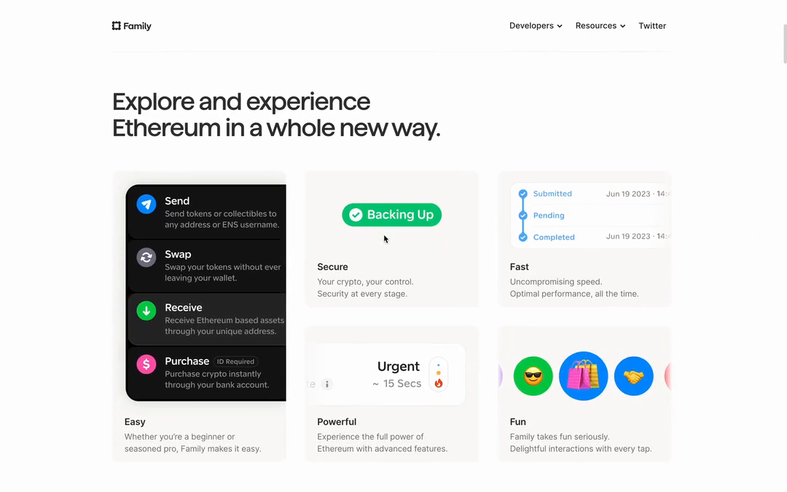
4–7초02 / BENTO
Explore · five cards
Easy / Secure / Fast / Powerful / Fun. 단순 레이아웃뿐 아니라 2초 간격의 내부 상태 변화를 개별 썸네일로 제공합니다.
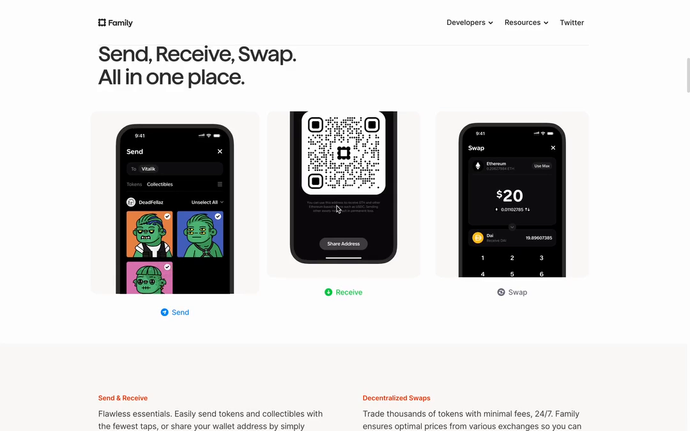
8–11초03 / APP
Send · Receive · Swap
3열의 폰 미디어와 아래 캡션. 원본 3개 영상과 전송·수신·교환 아이콘 동작을 함께 제공합니다.
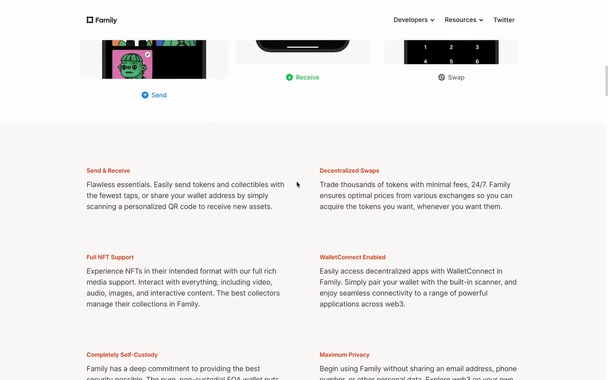
10–13초04 / STATIC
Feature copy grid
기능명과 짧은 설명으로 이루어진 2열 텍스트 블록. 낮은 대비 배경과 촘촘한 본문 위계가 특징입니다.
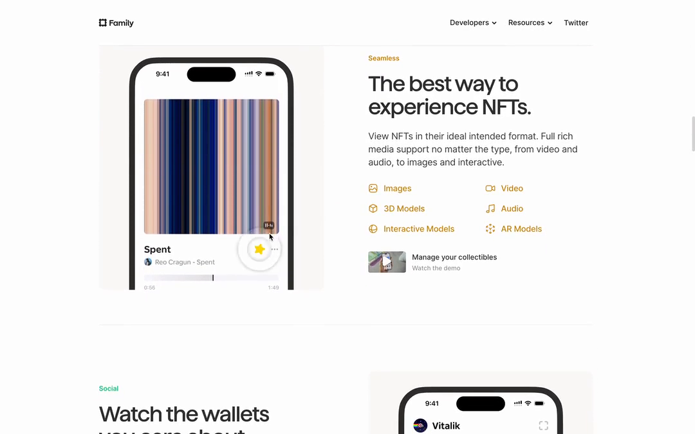
13–17초05 / APP
The best way to experience NFTs
좌측 폰, 우측 골드 라벨·제목·지원 포맷 목록. 영상과 재생/즐겨찾기 컨트롤 재구성을 함께 제공합니다.
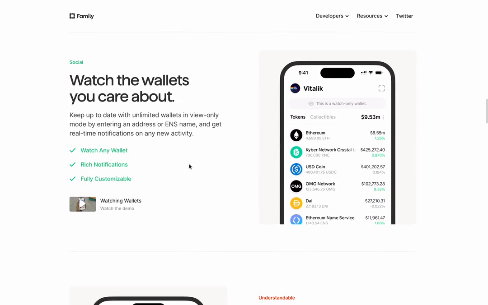
17–19초06 / APP
Watch the wallets you care about
Watch 기능을 설명하는 교차 배치. green 체크 리스트, 간결한 설명과 토큰 화면이 대응됩니다.
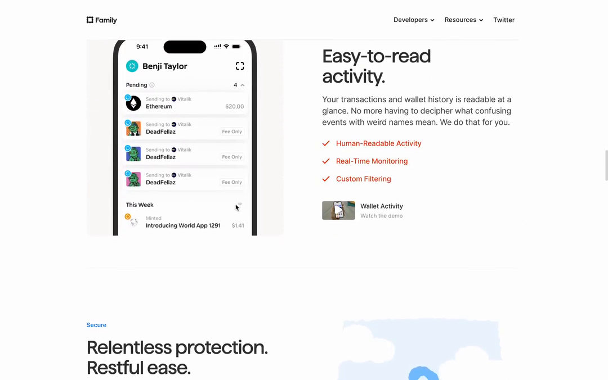
19–21초07 / APP
Easy-to-read activity
새 거래가 더해지는 리스트, 날짜·아바타·상태 강조. 폰 원본과 작은 활동 목록 예시를 모두 제공합니다.
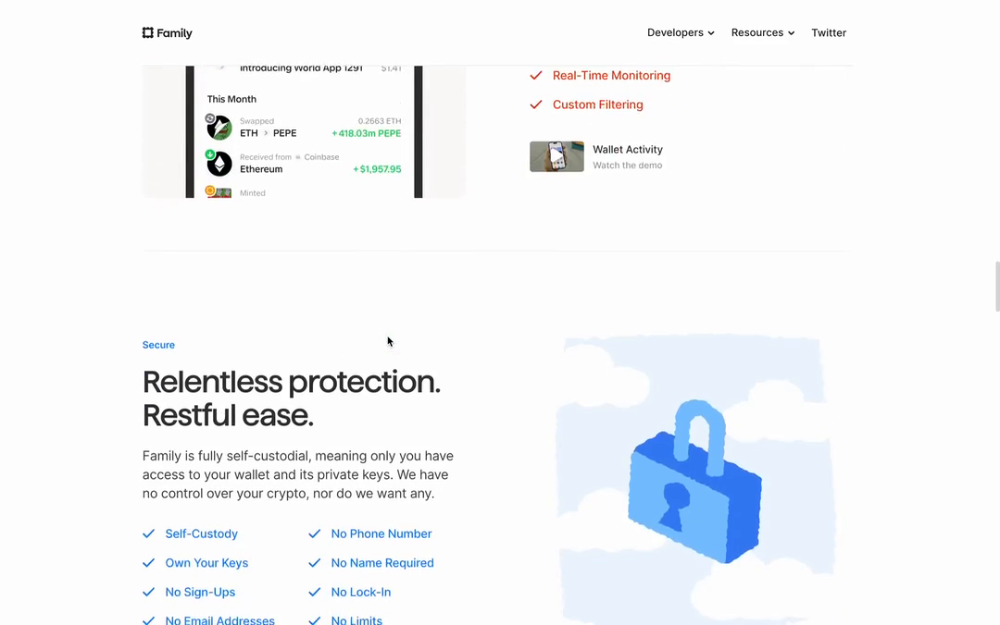
21–23초08 / ILLUSTRATION
Relentless protection. Restful ease.
구름과 파란 자물쇠 일러스트. 현재 사이트의 보안 마스코트 SVG도 별도로 보존했습니다.
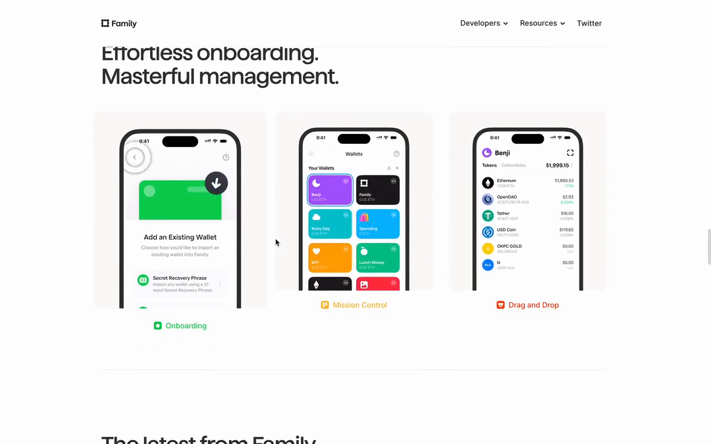
24–27초09 / APP
Effortless onboarding. Masterful management.
온보딩 / Mission Control / 드래그 정리의 3열 구성. 원본 세 영상과 실제로 움직일 수 있는 그룹·재정렬 컨트롤이 있습니다.
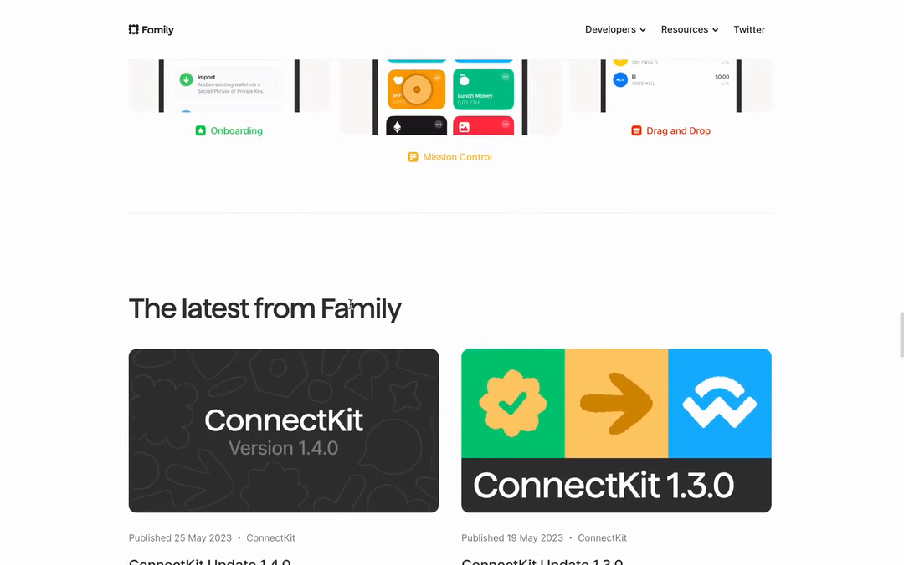
27–29초10 / CONTENT
The latest from Family
2열 이미지 카드에 메타 정보와 설명을 붙입니다. 이미지에만 1.02배 hover를 적용하는 원본 규칙을 시연합니다.
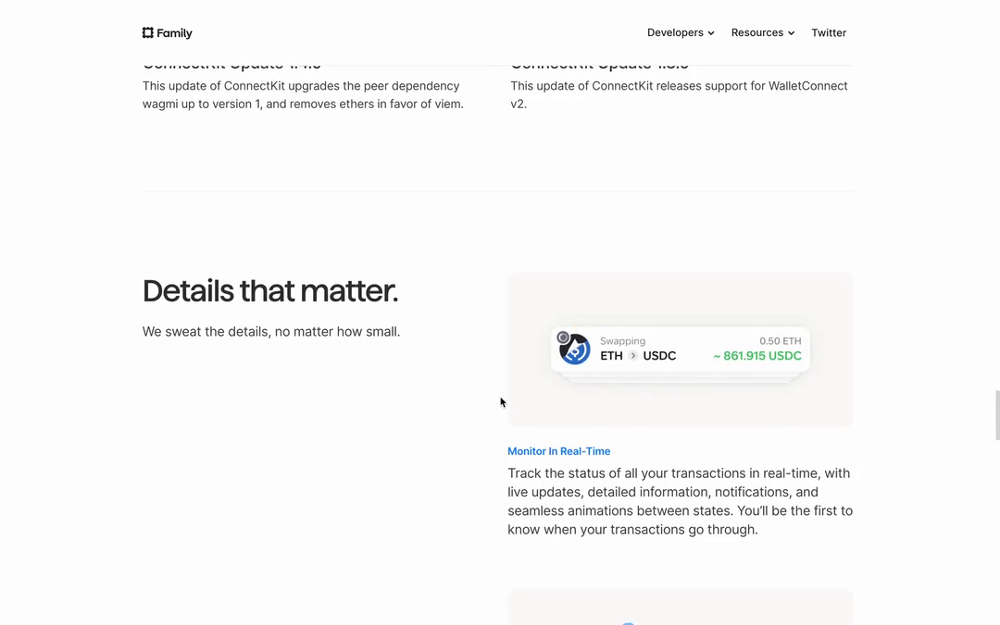
29–38초11 / DETAILS
Details that matter
Monitor / Protect / Organise / See Clearly 네 가지. 거래 카드 겹침, 보호 배지, 토큰 수치, 그룹 표시를 개별 상태 루프로 구현했습니다.
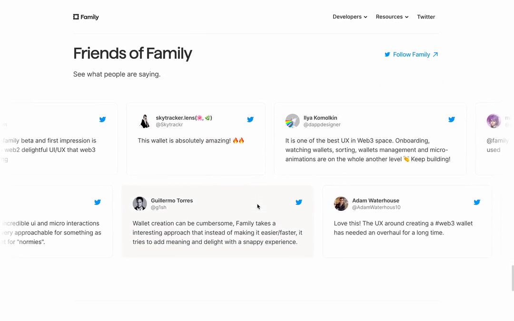
39–42초12 / CONTENT
Friends of Family
후기 카드 레일과 양끝의 fade mask. 120초 선형 반복을 재현하고 일시정지와 모션 감소 설정을 제공합니다.
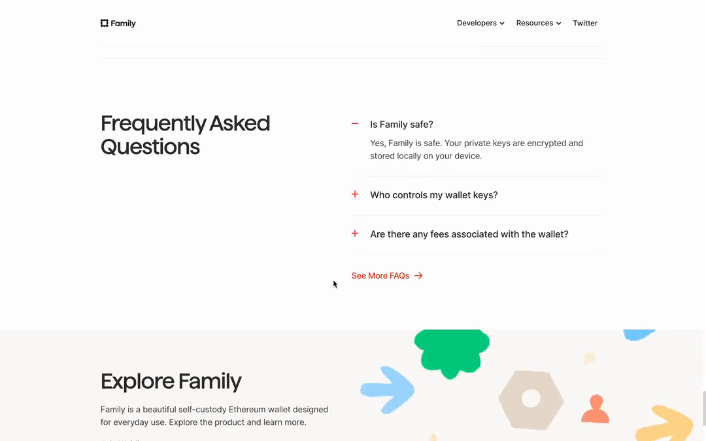
43–45초13 / CONTENT
Frequently Asked Questions
질문을 누르면 한 항목만 열리는 아코디언. +/−, 답변 높이와 투명도가 서로 다른 spring으로 변합니다.
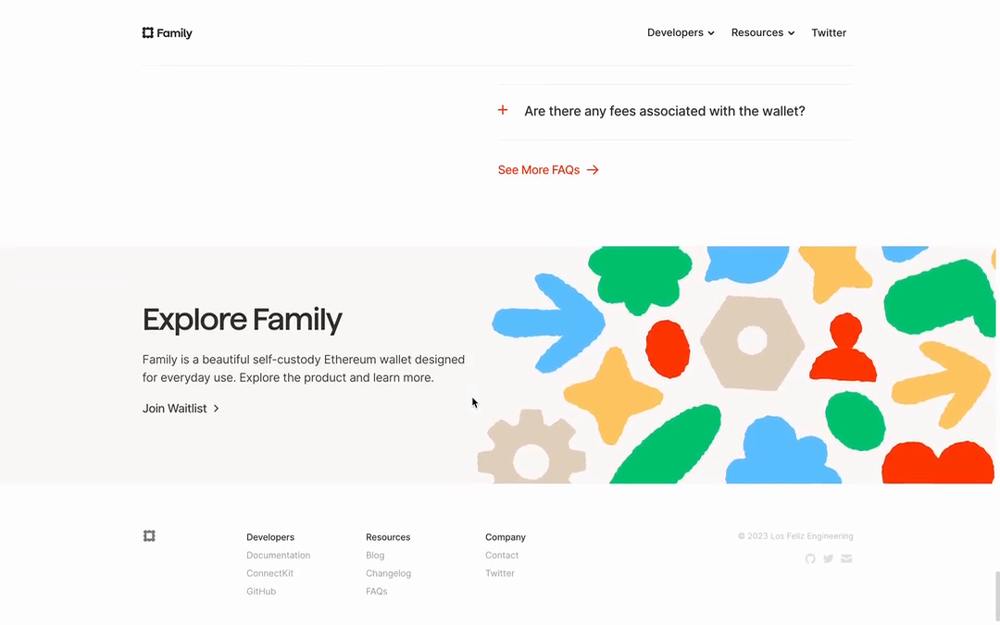
45–46.85초14 / HERO
Explore Family · footer
마지막 CTA와 잘린 장식 그래픽. viewport 진입 시 시작하는 도형별 stagger를 추가 구현했습니다.
05 / ORIGINAL SHAPES & ASSETS
The little things, included.
원본 DOM의 SVG 94개와 Hero 도형 그룹 69개를 확보했습니다. 대표 도형은 바로 다운로드하고, 전체 자료는 소스 패키지에서 볼 수 있습니다.
Flower SVG ↓Wallet SVG ↓Shield SVG ↓Arrow SVG ↓Heart SVG ↓ Scallop SVG ↓Grid SVG ↓Lock SVG ↓
Scallop SVG ↓Grid SVG ↓Lock SVG ↓
{kind=link}
{kind=link}
{kind=link}
{kind=link}
{kind=link}
{kind=link}
Gear SVG ↓Ethereum SVG ↓Flower Blue SVG ↓Bee SVG ↓{kind=link}
{kind=link}
{kind=link} Scallop SVG ↓Grid SVG ↓Lock SVG ↓
Scallop SVG ↓Grid SVG ↓Lock SVG ↓{kind=link}
{kind=link}
{kind=link}
{kind=link}
영상의 과거 일러스트와 현재 사이트의 마스코트는 구분했습니다. 색상 변수가 빠져 검게 보이지 않도록, 다운로드용 SVG에는 원본 fallback 색상도 포함했습니다.
06 / COLOR
Quiet canvas. Vivid accents.
따뜻한 화이트와 차콜이 바탕을 만들고, 블루·그린·오렌지가 기능과 일러스트를 구분합니다. 색상 카드를 누르면 원본 fallback 값을 복사합니다.
CSS 원본 변수명 유지. 표기값은 sRGB fallback이며, 지원 브라우저에서는 원본 Display P3 선언을 사용합니다. 두 색공간의 채널값은 서로 동등한 HEX 변환값이 아닙니다.
Neutral first
heading / body / body-muted
white / beige / gray-light
Functional accents
blue · 보안 / 세부 기능
green · Watch / 긍정 신호
Expressive graphics
graphic-* · 장식·일러스트 전용
본문 텍스트로 일괄 사용하지 않기
07 / TYPOGRAPHY
Human curves. Clear hierarchy.
Family는 큰 제목, Inter는 본문과 컨트롤, LFE Sans는 일부 앱 데모 내부에서 관찰됩니다. 한국어는 시스템 sans-serif 대체 글꼴로 표시됩니다.
Family · 500
Your favorite
crypto wallet.
crypto wallet.
Family · 500
Details that matter.
Explore Ethereum in a whole new way.
Inter · 19 / 27 · −0.3pxWe sweat the details, no matter how small.
Inter · 17 / 26 · −0.22pxSimple tools. Thoughtful details.
Inter · 15 / 22 · −0.13px모바일 Hero: 44/48. 섹션 Heading: 32/35. 정확한 적용 분기와 세부 크기는 DESIGN.md 참조.
08 / LAYOUT & SHAPE
Give the product room.
Easy
Secure
Fast
Powerful
Fun
Bento: 3열 → 2열 → 1열. 880px 및 580px 경계. 실제 섹션들은 768px 분기도 사용하므로 단일 전역 분기로 합치지 않습니다.
6nav item
8panel
12card
32pill
40device
Responsive layout recipes
별도 화면에서 열기 ↗탭을 바꾸며 Bento, split, 3열 폰, 설명 그리드, sticky Details를 실제 HTML로 확인하세요.
09 / COMPONENTS
Small pieces. A familiar family.
아래 컨트롤은 추출한 스타일 규칙을 적용한 로컬 데모입니다. 폼 전송이나 외부 계정 생성은 하지 않습니다.
Buttons
CSS48px / compact 32px · radius 32px
background-color 100ms ease. Disabled는 제안 상태.
Navigation dropdown
재구성Hover · Click · Focus · Escape
8px radius · 100ms opacity/transform
Waitlist input
영상 + 제안FAQ accordion
영상 + 제안Is Family safe?
영상에서 답변이 펼쳐지고 다음 행이 아래로 이동합니다. 이 문장은 제품 보안에 대한 주장이 아닌 동작 설명입니다.
Who controls my wallet keys?
키보드와 터치로 열 수 있는 네이티브 disclosure를 사용했습니다.
10 / REFERENCE & RESEARCH
See where it comes from.
CSS · 원본 선언LIVE · 현재 화면VIDEO · 과거 화면제안 · 재구성
Recent 영상 · 1080 × 676 · 60fps · 46.85초. 버튼으로 구간 이동.
두 버전, 하나의 디자인 언어
비공개 앱 내부 구조는 원본으로 단정하지 않고, 원본 MP4 옆에 조작 가능한 대체 구현으로 보완했습니다.
비공개 앱 흐름 대체 구현 열기 ↗영상: “Your crypto. Family style.”와 Join Waitlist.
현재: “Your favorite crypto wallet.”와 다운로드 / Get Started.
색상·폰트·CSS 수치는 현재 사이트에서 읽었습니다. 과거 영상의 정확한 CSS 값으로 단정하지 않습니다.
공개 JS에서 복구한 모션 수치 ↗원본 영상·SVG 소스 인벤토리 ↗영상 전체 콘택트 시트 ↗현재 데스크톱 캡처 ↗현재 모바일 캡처 ↗{kind=link}
{kind=link}
{kind=link}
11 / HANDOFF
Ready to reference.
프로젝트 적용 가이드 ↗실무용 프로젝트 키트 ↓npm 로컬 설치 패키지 ↓Source manifest JSON ↓Source embedded data ↓Source browser CSS ↓Source browser JS ↓Private app substitutes ↗App substitute CSS ↓App substitute JS ↓전체 소스 패키지 ↓Source motion tokens ↓Interactive preview specs ↓Scene coverage map ↓디자인 시스템 명세 ↗CSS tokens ↓JSON tokens ↓모션 관찰 기록 ↗
원본 사이트의 공개 화면과 리소스를 분석한 참고용 추출물입니다. 폰트·일러스트의 재배포/상용 사용 권한은 확인되지 않았습니다. 원본 페이지에서 일부 503 및 React 오류가 관찰되어 모든 상태를 검증한 결과는 아닙니다.
Sources: Recent / Family · family.co